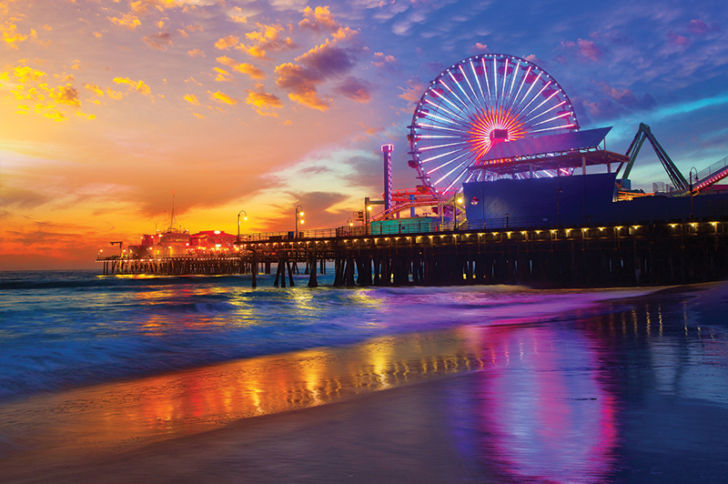
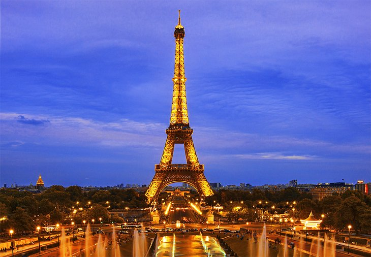
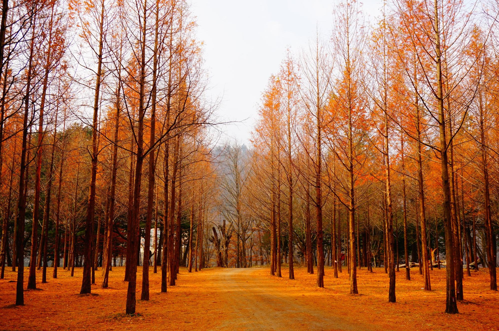
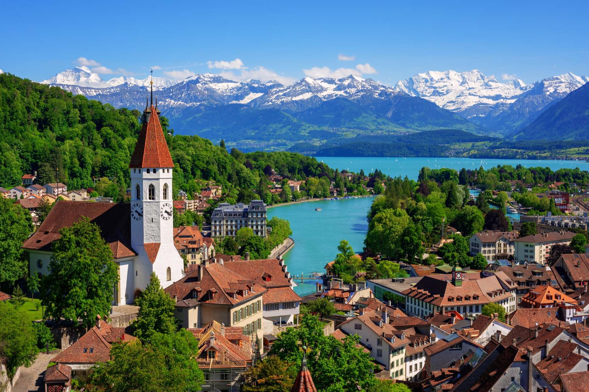
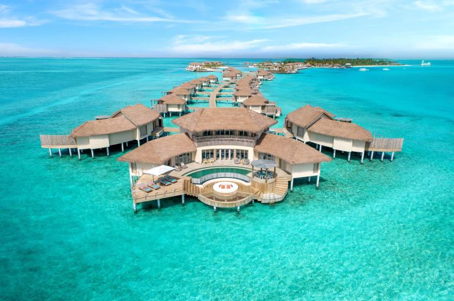

World Wide Tourist Attractions
- Los Angeles - Santa Monica Pier
- The West Coast's only amusement park located on a pier features the world's only
solar-powered Ferris wheel, the Pacific wheel. It also features the Santa Monica pier roller coaster,
the West Coaster, an exhilarating roller coaster that towers 55-feet above the Pacific Ocean, midway
games, food and shopping.

- Paris - Eiffel Tower
- The Eiffel Tower, La Tour Eiffel in French, was the main exhibit of the Paris
Exposition or World's Fair of 1889. It was constructed to commemorate the centennial of the French
Revolution and to demonstrate France's industrial prowess to the world.

- Korea - Nami island
- "Surfing Capital of the Philippines"
Nami Island is well worth a visit if you're not a K-drama fan. It's family friendly and has various
activities around the island. The autumn colors arrive at South Korea around late October to early
November. The shades of red and orange paint the island in intense bright hues. It's hard not to fall in
love with Nami Island.

- Switzerland
- Switzerland is one of the least dangerous countries in Europe and worldwide.
The population is generally very wealthy which makes the crime rate relatively low. Of course, there are
small issues with pickpocketing and petty theft, but it's nothing tourists need to be afraid of

- Maldives
- The Maldives is famous for a number of reasons, including its vibrant culture, pristine
beaches, sprawling greenery, and fascinating landmarks. Apart from the numerous enchanting landmarks,
Maldives is also famous for water sports and other adventure activities.
